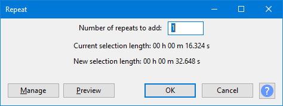

Repeat
From Audacity Development Manual
Repeat repeats the selection the specified number of times.
- Accessed by:
- 
{kind=link}
Number of repeats to add
Specifies the number of times the selected audio will be repeated. The default setting is 1 repeat (that is you will than have two copies of the selected audio).
Current selection length
Shows what the resultant selection length of the currently selected aufio is prior to the repeat.
New selection length
Shows what the resultant selection length will be, depending on the specified number of repeats. The resultant selection includes both the originally selected audio and the inserted audio that has been repeated.
- If the selection to be repeated borders the right edge of an audio clip, each repeat becomes a separate clip bordered by black vertical split lines.
- Any audio to right of the inserted repeats is moved to right, and so not overwritten. However the repeat will not be allowed if it would move other clips and "Editing a clip can move other clips" in Tracks Preferences is unchecked.
- Repeat does not copy the original or resultant selection to the Audacity clipboard.
Buttons
Clicking on the command buttons give the following results:
- gives a dropdown menu enabling you to manage presets for the tool and to see some detail about the tool. For details see Manage presets.
- plays a short preview of what the audio would sound like if the effect is applied with the current settings, without making actual changes to the audio. The length of preview is determined by your setting in , the default setting is 6 seconds.
- applies the effect to the selected audio with the current effect settings.
- aborts the effect and leaves the audio unchanged.
 brings you to the appropriate page in the Manual, this page.
brings you to the appropriate page in the Manual, this page.